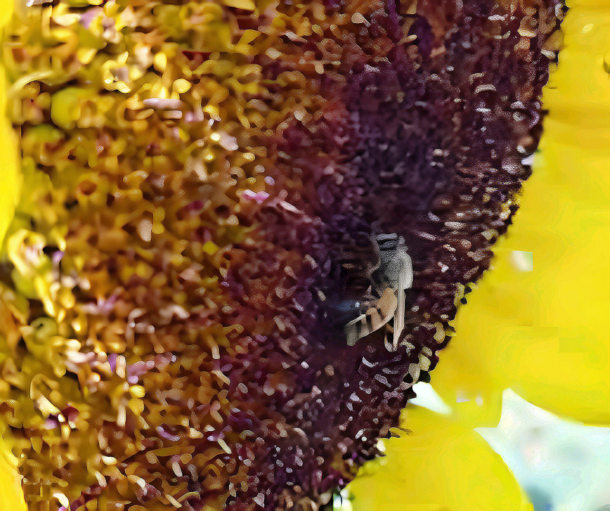
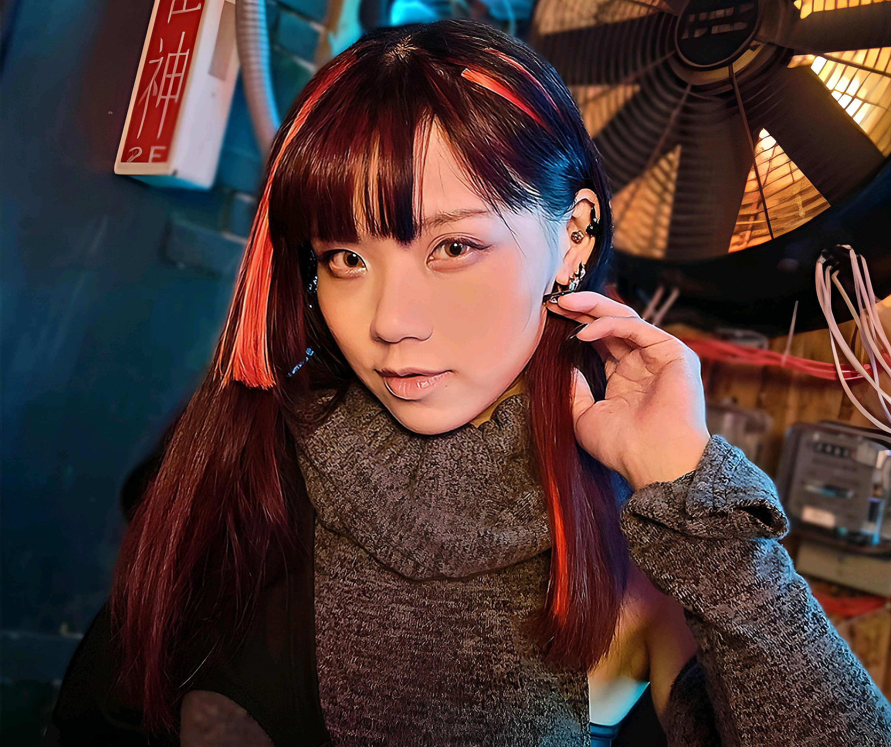
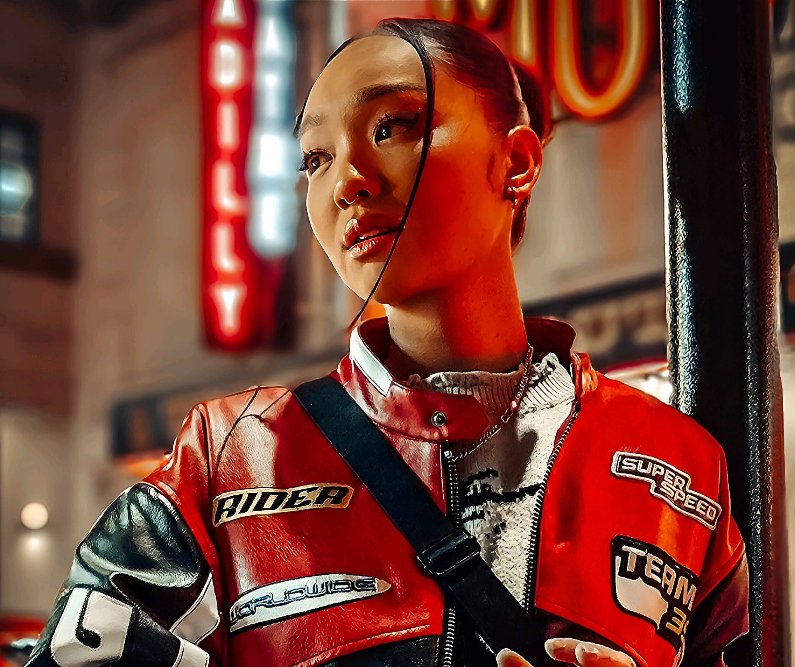
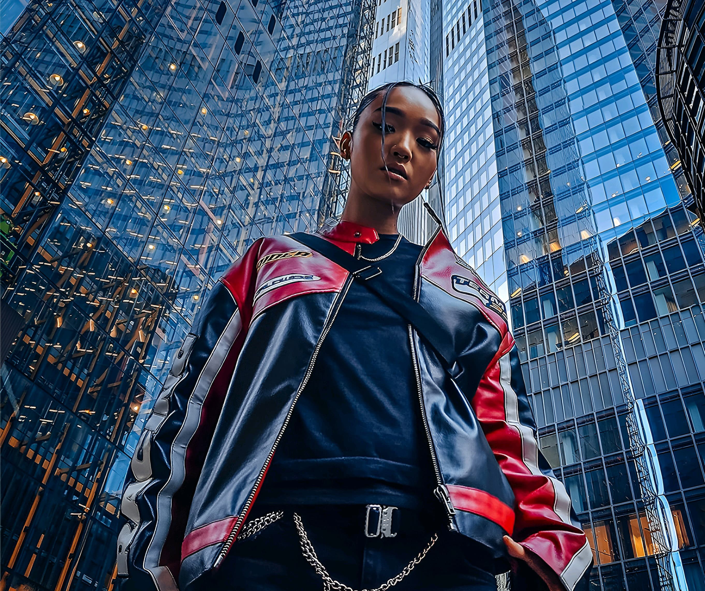
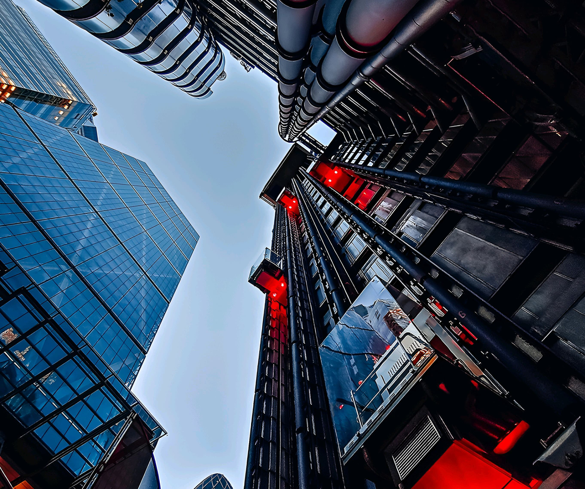
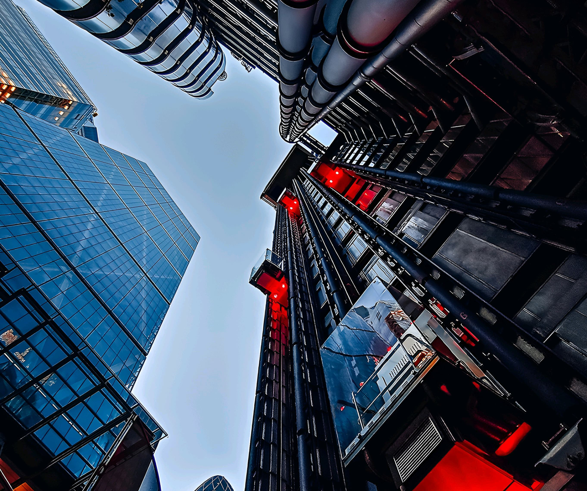
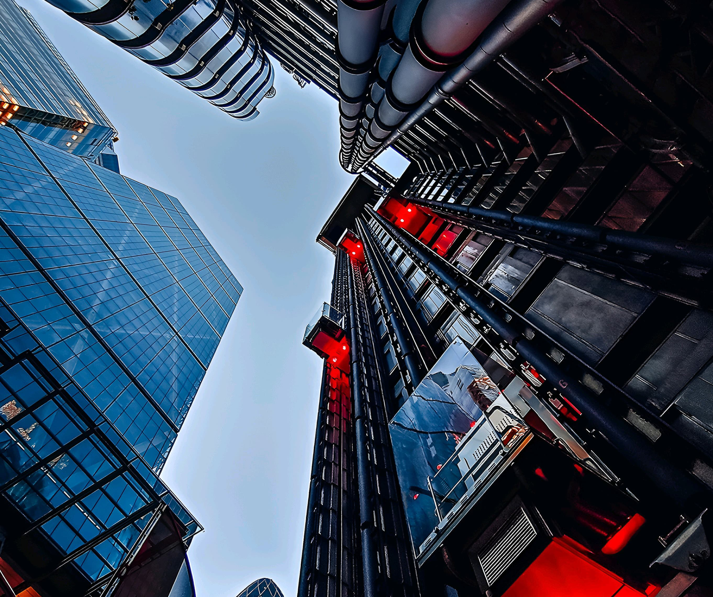

 


Adéntrate en el futuro del mundo gaming para móviles con el revolucionario y rediseñado ROG Phone 8, una mezcla sin precedentes de pura destreza gaming y elegancia para el día a día: se trata de un teléfono avanzado para gamers y un auténtico teléfono de gama alta. Cuenta con la plataforma móvil Snapdragon® 8 Gen 3 y nuestro diseño térmico mejorado para ofrecer un rendimiento incomparable. Deleita tus ojos con la pantalla Samsung AMOLED de 6,78", que ofrece tecnología LTPO y hasta 2500 nits de brillo máximo, y captura momentos como un profesional con la cámara equipada con el estabilizador gimbal híbrido de 6 ejes, que, además, tiene un teleobjetivo 3x. Disfruta sin esfuerzo y lleva tus videojuegos y tu día a día a otro nivel con este dispositivo extraordinario.
Diseño para el futura
Experiencia similar a la de una consola
Refrigeración evolucionaria
Potencia gaming increíble
Sistema avanzado de tres cámaras
Amoled E6 de 6,78"
Sonido espacial de calidad cinematográfica
Enorme capacidad para usuarios avanzados
``````````````````````````````````````````````````````````````
La serie ROG Phone 8 se ha rediseñado por completo: es la mayor modernización de su larga historia. Ha pasado de ser un teléfono para gamers purasangre a convertirse en un dispositivo revolucionario y futurista de primera calidad futurista, con un cuerpo más delgado y ligero y biseles más finos, que lo hacen el teléfono perfecto para el día a día de los gamers.
17 %
más pequeño
15 %
más fino
9 %
más ligero
``````````````````````````````````````````````````````````````
Enciende la iluminación Aura RGB del ROG Phone 8 y libera tu esencia interior sin restricciones. Personaliza el logotipo de ROG Fearless Eye según tus preferencias y adáptalo a tus emociones con la amplia gama de colores o patrones de iluminación predefinidos.
``````````````````````````````````````````````````````````````
Gracias a su resistencia a la entrada de polvo y agua IP682, el ROG Phone 8 te permite jugar donde y cuando quieras sin preocuparte.
``````````````````````````````````````````````````````````````
Los controles AirTrigger integrados te ofrecen control del juego sin igual con la punta de tus dedos en una experiencia similar a la de una consola. Admiten una amplia gama de gestos, como doble acción, pulsar y levantar o apuntar con el giroscopio. Asume todo el control con el ROG Phone 8.
Acopla el AeroActive Cooler X y ¡listo!: tienes otros dos botones físicos para mejorar aún más tu experiencia de juego.
El mando enchufable ROG Tessen* convierte al instante tu ROG Phone 8 en una videoconsola portátil profesional increíblemente cómoda.
``````````````````````````````````````````````````````````````
El ROG Phone 8 tiene funciones de software únicas y potentes para ofrecerte una experiencia de juego incomparable.
Mediante la aplicación de IA de reconocimiento de patrones, X Sense 2.0 no solo detecta eventos clave, sino que, además, recoge objetos, entabla conversaciones y mejora automáticamente tus posibilidades para ofrecerte un control perfecto sobre tu héroe en los juegos compatibles.
Mediante la aplicación de IA de reconocimiento de patrones, X Capture registra automáticamente tus mejores momentos, como cuando dejas fuera de combate a varios enemigos o ganas la partida.
El modo en segundo plano funciona en juegos con combate automático, por lo que puedes ejecutar el juego en segundo plano para continuar tu aventura sin tener que estar pendiente y sin miedo de que el sistema pause o cierre el juego.
En los juegos compatibles, la IA de reconocimiento de patrones puede identificar palabras clave en conversaciones o diálogos para que puedas copiar fácilmente el contenido y realizar búsquedas en línea cuando necesites consejo.
El mapeado de vibración te permite establecer diferentes niveles de retroalimentación háptica para cada uno de los botones en pantalla virtuales, para que sea más fácil localizarlos y usarlos. Por ejemplo, puedes establecer una vibración suave para los ataques normales y un efecto más fuerte para los combos potentes.
Accede mejor a tu teléfono desde tu PC. Accede a la pantalla, a la galería y a todo el contenido de tu teléfono en tiempo real de forma sencilla.
Gracias a Snapdragon 8 Gen 3, la serie ROG Phone 8 es compatible con la tecnología Seamless para ofrecerte una experiencia de sincronización entre dispositivos completamente nueva en tu PC con Snapdragon X Elite.
``````````````````````````````````````````````````````````````
A pesar de su formato de líneas más puras, el ROG Phone 8 aloja una revolucionaria estructura térmica de precisión. GameCool 8 adopta nuestro innovador diseño SoC Cooling System Gen 2 de 360°, que supone una mejora del 22 %4 de la eficiencia térmica. Además, el AeroActive Cooler X más reciente es aún más potente para garantizar un rendimiento adicional: ¡hasta otro 20 % de eficiencia térmica!
``````````````````````````````````````````````````````````````
Los ingenieros de ROG han descubierto la solución definitiva de refrigeración pasiva. Nuestro SoC Cooling System Gen 2 de 360° coloca un conductor de enfriamiento rápido exactamente entre el SoC y el metal que está cerca de la cubierta trasera para que el calor se disipe de modo uniforme desde todas las capas térmicas. Además, cuando se acopla el AeroActive Cooler X, la ubicación del conductor de enfriamiento rápido coincide exactamente con el lugar en el que el chip de refrigeración termoeléctrico toca el teléfono, de modo que el chipset se refrigera de forma directa y eficiente.
``````````````````````````````````````````````````````````````
El más reciente AeroActive Cooler X es más compacto y, aun así, más potente. En comparación con el modelo anterior, es más pequeño y más ligero, pero el chip de refrigeración termoeléctrico es 2,6 veces mayor5 y la velocidad de rotación del ventilador es 1,1 veces más rápida5 para mejorar hasta 1,3 veces el rendimiento de la refrigeración.
Termoeléctrico
Sistema refrigeración por IA
Hasta
36 °C
menos de temperatura de la cubierta trasera inferior
2
botones físicos
``````````````````````````````````````````````````````````````
Los ROG Phone siempre definen el estándar de rendimiento con su excelente diseño térmico y el característico X Mode para aumentar al máximo la potencia real del procesador. Con la plataforma móvil Snapdragon® 8 Gen 3 de 3,3 GHz, la CPU es un 30 % más rápida que antes7 y la GPU, un 25 %7. Además, el ROG Phone 8 está equipado con RAM LPDDR5X de 8533 Mb/s y ROM UFS 4.0.
Snapdragon® 8 Gen 3
Plataforma móvil Qualcomm®
Hasta
16 GB
de RAM LPDDR5X
Hasta
256 GB
de ROM UFS 4.0
``````````````````````````````````````````````````````````````
El ROG Phone 8 tiene un sistema de tres cámaras avanzado que ofrece posibilidades infinitas. Captura asombrosas imágenes ultrapanorámicas, acerca objetos distantes o graba vídeos superestables.
La cámara principal ofrece imágenes cristalinas gracias al más reciente sensor de imagen Sony IMX890 de 50 MP. El objetivo gran angular de 24 mm³ permite obtener imágenes perfectas en la calle. Además, el modo de zoom 2x sin pérdidas transforma el objetivo gran angular en el equivalente de un objetivo de distancia focal fija de 50 mm², perfecto para hacer retratos y fotografiar comida.
La cámara principal tiene un increíble estabilizador gimbal híbrido de 6 ejes 3.0 para obtener vídeos aún mejores e imágenes sin vibraciones de forma dinámica con ±3 grados de corrección del movimiento. Ahora, la estabilización avanzada admite tanto el modo de cámara estándar como el de retrato, por lo que es perfecta para hacer fotografías con poca luz. El ROG Phone 8 también lleva la estabilidad del vídeo al siguiente nivel. Su OIS antivibración de hardware y su algoritmo de software EIS mejorado (que usa el giroscopio para detectar el movimiento) permiten el ajuste dinámico del campo de visión para garantizar siempre una estabilidad absoluta en los vídeos.
Por primera vez, el ROG Phone 8 un teleobjetivo de 32 MPº que permite capturar objetos lejanos. Este teleobjetivo 3x cuenta con estabilización de imagen óptica integrada para garantizar resultados definidos y nítidos, y es compatible con el modo de fotografía nocturna para ofrecer imágenes asombrosas con poca luz. Además, el ROG Phone 8 usa la tecnología HyperClarity con archivos sin procesar (RAW) para preservar cada detalle, por lo que te ofrece imágenes más claras incluso con el zoom 10x y hasta el zoom 30x.
La cámara ultrapanorámica de 13 MP del ROG Phone 8 es perfecta para hacer asombrosas fotos de paisajes o retratos en poco espacio. Usa un diseño óptico de modelado de superficies de forma libre y los algoritmos más recientes para reducir la distorsión de la lente y producir imágenes asombrosas pero naturales.
La cámara frontal tiene un FoV ultrapanorámico de 90 perfecto para selfies en grupo. Puedes elegir entre un campo de visión estándar 1x o un ángulo ultrapanorámico 0,7x para diferentes fines. Y no solo eso, sino que, con los píxeles blancos adicionales de su sensor RGBW de 32 MP para capturar más luz, se obtienen imágenes limpias con menos ruido incluso con poca iluminación.
``````````````````````````````````````````````````````````````
El ROG Phone 8 usa los algoritmos de fotografía computacional y las funciones de software más recientes para mejorar la calidad de la imagen aún más. ¡Magia!
AI Object Sense divide la imagen en varias secciones (cielo, mar y arena, por ejemplo) y optimiza el contraste y la saturación por separado, lo cual produce resultados vívidos pero naturales.
Atrapa el momento pulsando dos veces la tecla de volumen: la cámara captura tres fotos instantáneamente para que no te pierdas ningún momento importante.
Este modo usa apilamiento de imágenes de varios fotogramas con IA para crear asombrosas fotos de exposición prolongada con el móvil.
Gracias a la adopción del aprendizaje multimodal, el ROG Phone 8 puede usar lenguaje natural para buscar fotos. Por ejemplo: di "Muéstrame las fotos de la puesta de sol que hice en Tokio" y el sistema buscará los mejores resultados por ti.
Con la tecnología de OZO Audio, puedes eliminar el ruido del viento para crear vídeos nítidos o capturar una experiencia de sonido envolvente 3D de alta fidelidad.

``````````````````````````````````````````````````````````````
El ROG Phone 8 está equipado con un nuevo panel AMOLED E6 (flexible) de 6,78" que admite frecuencias de actualización adaptativas para reducir el consumo de energía. También puedes seleccionar una frecuencia de actualización de hasta 165 Hz para jugar sin problemas, mientras que la velocidad de muestreo táctil alcanza nada menos que 720 Hz para responder al instante. El brillo máximo aumenta ahora hasta 2500 nits, lo que te permite jugar o ver películas incluso bajo la luz de sol sin problema alguno. Además, tienes una precisión de color Delta E 1 para obtener imágenes impresionantes. Al reducirse los biseles, el ROG Phone 8 consigue una proporción pantalla-cuerpo del 94 %. El panel está protegido por Gorilla® Glass Victus™2 para ofrecer más resistencia.
Modo de protección ocular
en todos los ajustes de frecuencia de actualización
``````````````````````````````````````````````````````````````
Dirac Virtuo™ para auriculares lleva el sonido espacial a todos tus auriculares (con cable, Bluetooth® o USB-C) para que puedas disfrutar de una experiencia de cine cuando juegues, veas películas o escuches música. Al adoptar la más reciente tecnología de cancelación de ruido con IA10, el ruido de fondo indeseado puede eliminarse al instante para que tu voz suene con total claridad. Además, el ROG Phone 8 admite Qualcomm® aptX™ Adaptive y aptX Lossless para garantizar un audio Bluetooth de alta fidelidad y latencia superbaja.
``````````````````````````````````````````````````````````````
El ROG Phone 8 cuenta con la inmensa batería que lo caracteriza y un potente cargador USB PD HyperCharge de 65 W. Además, la carga inalámbrica adicional de 15 W te ofrece más flexibilidad en los viajes. El ROG Phone 8 es el compañero perfecto para los usuarios avanzados, tanto para jugar sin descanso o navegar por redes sociales como para ver películas.
5500 mAh
batería de gran capacidad
39 min
De 0 a 100%
Al menos
3,4 horas
de juego
Al menos
23 horas
de streaming de vídeo
Al menos
17 horas
de visualización de IG